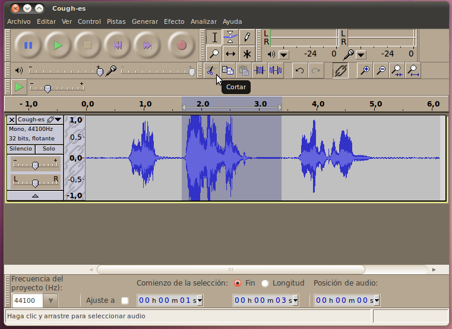
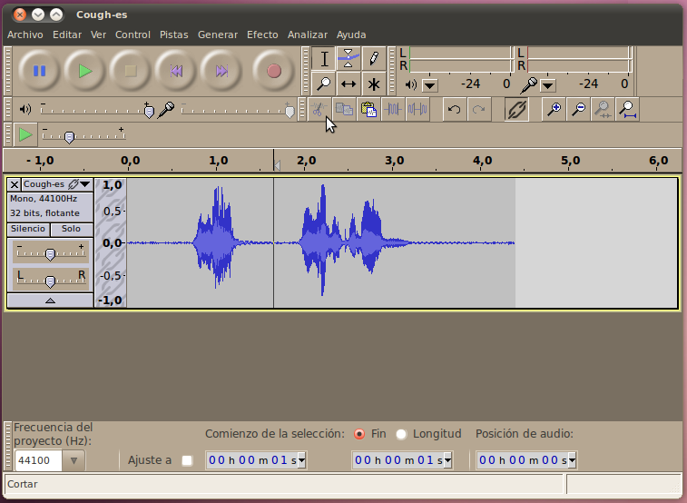
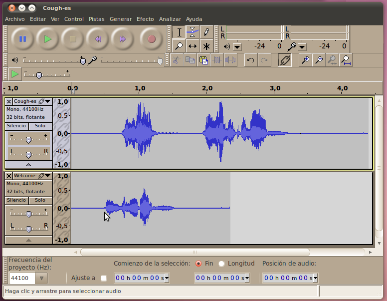
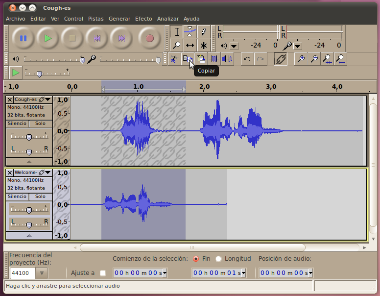
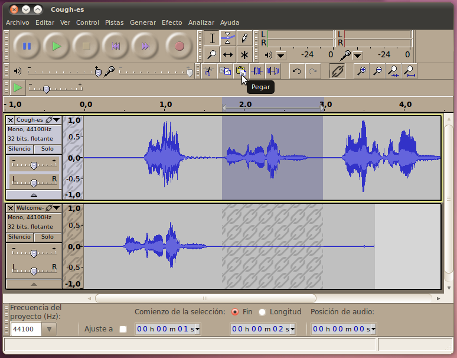
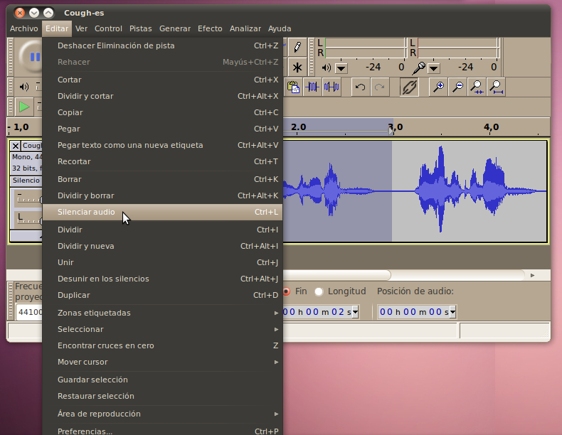
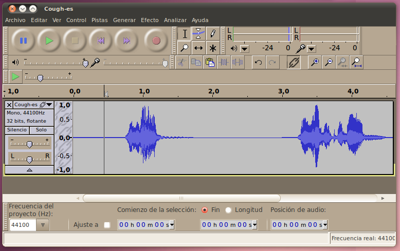

Cómo Cortar Audio
Una de las funciones más básicas para las que
se puede usar Audacity es para cortar partes de una pista de audio, y
si se desea para añadir esa parte a una nueva pista.
Intentemos el corte con una porción de audio (descárgarla aquí ahora) que tiene un sonido que vas a querer remover. En este caso, una persona va a toser mientras habla, y vamos a remover la tos.
Para comenzar el proceso de corte, escucha la pista y busca el área
en la gráfica de onda en la que se encuentra el cursor cuando el sonido
indeseable comienza y cuando termina. Luego, en el Modo de Selección,
arrastra tu cursor sobre el área que contiene el sonido indeseable. En
este caso, hay una pequeña pausa luego de la tos, así que vamos a
querer remover parte de esa pausa también.

Una vez tengas el área seleccionada, haz clic en el botón de cortar
(o presiona Ctrl+x, o selecciona "Cortar" desde el menú de Editar).
Terminarás con solamente el audio deseado en tu pista, y sonará como si
el audio indeseado nunca hubiera estado ahí.

Añadir Audio
El próximo paso luego de poder remover audio, es
poder añadir audio de un lugar de origen distingo. Continuando con
nuestro ejemplo de la sección anterior, vamos a añadir audio con la
persona diciendo "Bienvenidos" después de que diga Hola pero antes de
que diga su nombre. Aquí hay un clip de el hombre diciendo "Bienvenidos".
Para añadir este clip al proyecto, ve a Archivo -> Importar -> Audio... y luego selecciona el archivo en tu disco duro.

Una vez tengas el sonido en tu proyecto, puedes tratar de
reproducirlo. Notarás que el audio de ambas pistas suena a la misma
vez, uno sobre el otro. Eso no lo queremos: al contrario, queremos que
el sonido de "Bienvenidos" quede entre el "Hola" y el nombre. Para
hacer esto, seleccionemos la grabación de "Bienvenidos" en la pista
inferior, y seleccionesmos la opción de "Copiar".
Luego vamos a mover la línea del cursor al punto apropiado en la pista
superior haciendo clic en ese punto, y luego usemos el botón de
"Pegar". Finalmente, como ya no necesitamos la pista inferior, podemos
eliminarla haciendo clic en la "X" a en la esquina izquierda.

Ahora escucha tu pista para ver cómo suena. Un posible asunto es
que si el espacio entre las secciones no es natural, puede que se
escuche un poco extraño. Esto es fácil de resolver re-haciendo el
proceso y copiando más espacio de la segunda pista a la primera. Si
usas mucho espacio, entonces peudes cortar un poco de espacio de la
primera pista.
Silencing
Being the finicky editor that you are, you've decided that you want to
remove the "Welcome" clip again, but you don't want to cut it out,
instead you want to leave empty space (silence) there, so that a live
announcer could put in his/her own welcome. To do this, we'll use
the silence tool. First, we'll select the audio we want to
silence, just like if we were going to cut or copy it. Then we
will select Edit -> Silence Audio from the menu.

Once this tool has run, you will see that the waveform for the area
selected has been set to zero. If you listen to the audio, there
is a nice gap for someone else to talk into where the "Welcome" was
previously.
